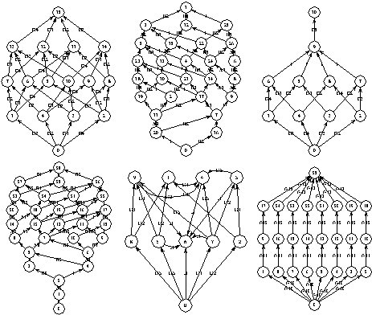

Table of Contents
bcg_draw - display graphs encoded in the BCG format
bcg_draw
[ bcg_options ] [ -ps ] [ -eps ] [ -size x y ] [ -paper z ] [ -bg ] [ -fg ] filename[.bcg]
This command takes as input the BCG graph filename.bcg and displays
this graph in an X11 window using the PostScript viewer specified by the
environment variable $CADP_PS_VIEWER (see below).
Alternatively, bcg_draw
can generate PostSript files (which can be printed) as well as Encapsulated
PostScript files (which can be included in electronic documents).
bcg_draw
attempts to provide nice graphical representations for BCG graphs. It borrows
ideas from a prototype tool for 2D graph drawing developed by Claude Jard
and Thierry Jeron (IRISA, Rennes, France). Radu Mateescu added various placement
heuristics for states and labels, so as to reduce the number of edge intersections
and label overwriting, while trying to preserve symmetry.
A dynamic library
corresponding to filename.bcg may be generated if necessary.
The format
of the PostScript files generated by bcg_draw is described in a technical
report (see the files $CADP/doc/*/Tock-95.*).
The PostScript files generated
by bcg_draw can be modified interactively using the bcg_edit
command.
The following bcg_options are currently supported: -version,
-create, -update, -remove, -cc, and -tmp. See the bcg
manual page for
a description of these options.
The following options
are also suported:
- -ps
- Do not display the graph, but generate instead a
PostScript file named filename.ps.
- -eps
- Do not display the graph in an X11
window, but generate instead an Encapsulated PostScript file named filename.ps.
The bounding box of the picture is computed according to the value of the
environment variable $CADP_PS_INTERPRETER (see below).
- -size x y
- Reduce the
size of the picture to a rectangle of length x and height y, where x and
y are two dimensions expressed in points (1 cm = 28.3 points, 1 inch =
72 points). By default, an A4 page format is selected.
- -paper z
- Reduce the
size of the picture to a rectangle of format z, where z is a character
string that may take one of the following values: Letter, A0, A1, A2, A3,
A4, or A5. By default, an A4 page format is selected. The -size and -paper
options are mutually exclusive.
- -bg
- When displaying the graph, open a display
window running in background mode. The execution of bcg_draw will terminate
immediately after this display window is started. Default option.
- -fg
- When
displaying the graph, open a display window running in foreground mode,
The execution of bcg_draw will only terminate when the user quits the
display window. Not a default option.

Graph drawings produced by bcg_draw
See the bcg
manual page for a description of the environment variables used by all
the BCG application tools. In addition, the following environment variables
are used by bcg_draw:
- $CADP_PS_VIEWER
- If this variable is set, its value
determines the name of the PostScript viewer that will be invoked by bcg_draw
(the name of the viewer may be followed by options). Otherwise, bcg_draw
will search (in the list of directories defined by the $PATH variable
plus in a set of plausible default locations) for a viewer named 'ghostview'
under Unix and 'gsview32.exe' under Windows.
- $CADP_PS_INTERPRETER
- If this
variable is set, its value determines the name of the PostScript tool that
will be invoked by bcg_draw with option -eps to compute the bounding box
of the Encapsulated PostScript file. Otherwise, bcg_draw will search (in
the list of directories defined by the $PATH variable plus in a set of
plausible default locations) for a tool named 'gs' under Unix and 'gswin32c.exe'
under Windows.
Exit status is 0 if everything is alright, 1
otherwise.
Renaud Ruffiot, Radu Mateescu, Hubert Garavel, Louis-Pascal
Tock, Marc Herbert
- filename.bcg
- BCG graph (input)
- filename@1.o
- dynamic
library (input or output)
- filename.ps
- PostScript file (output)
- $CADP/com/bcg_draw
- ``bcg_draw'' shell script
- $CADP/bin.`arch`/libbcg_draw.a
- ``bcg_draw'' static library
- $CADP/src/bcg_draw/bcg_draw_*.ps
- PostScript header & footer
- $CADP/src/com/cadp_postscript
- auxiliary shell script
- $CADP/src/com/cadp_psbox
- auxiliary shell script
See the bcg
manual page for a description of the other files.
bcg
, bcg_edit
.
Additional information is available from
the CADP Web page located at http://cadp.inria.fr
Directives for installation
are given in files $CADP/INSTALLATION_*.
Recent changes and improvements
to this software are reported and commented in file $CADP/HISTORY.
bcg_draw
is far from being perfect. There are several known problems, such as frequent
overwriting of transitions and labels, even for small graphs. For large
BCG graphs, the 2D representation is likely to be untractable by the user.
Please report bugs to Hubert.Garavel@inria.fr
Table of Contents